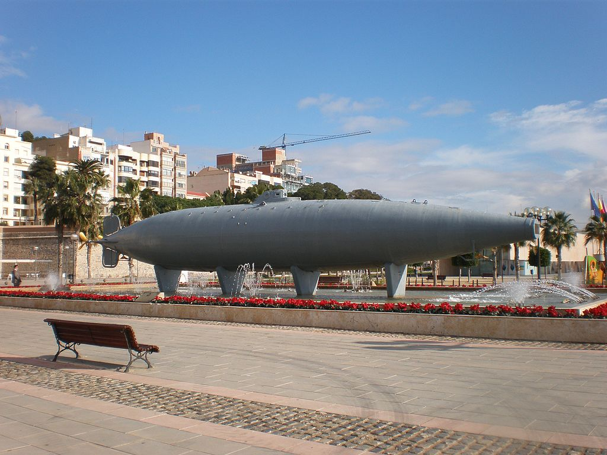
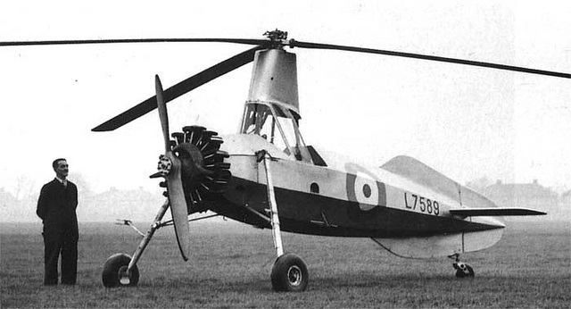
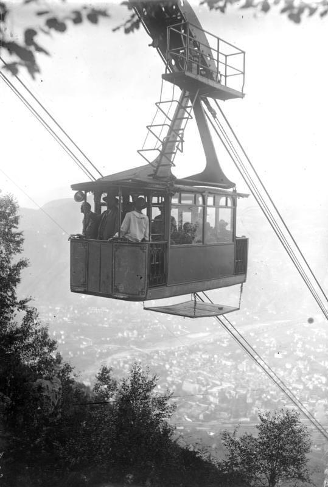
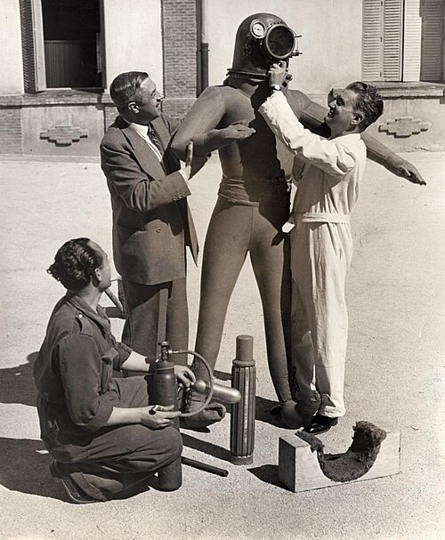
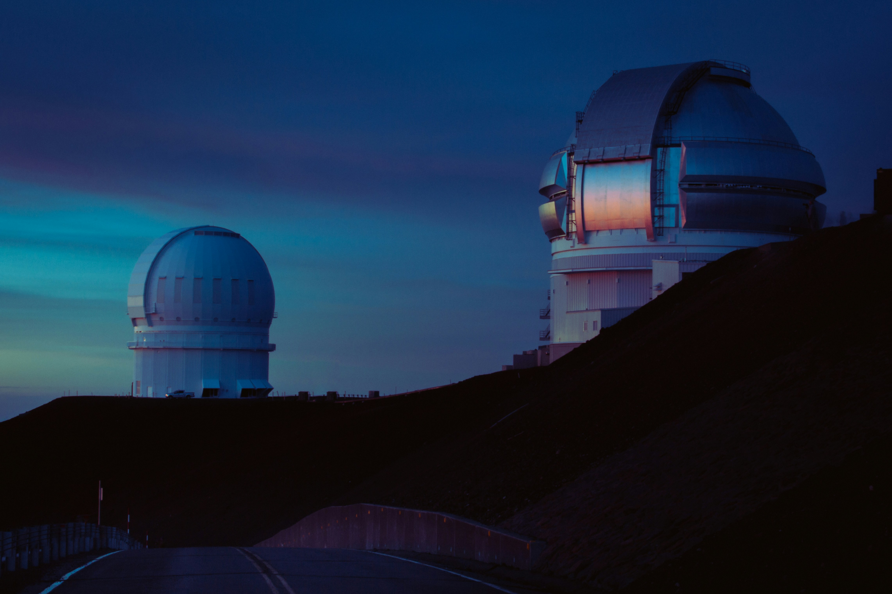
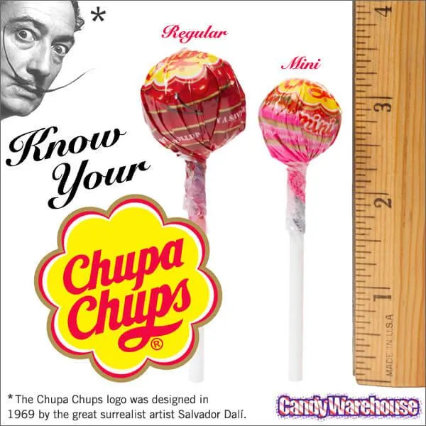

1. El Submarino
El submarino es inventado por Narcís Monturiol en 1859 en España. Lo crea para explorar bajo el agua sin peligro. Su invento se llama Ictíneo. Funciona con vapor y permite a las personas ir a grandes profundidades. Hoy en día, los submarinos se usan para la exploración científica y misiones militares. La idea de Monturiol es muy avanzada para su época e inspira el desarrollo de submarinos modernos.
2. El Giroplano
Juan de la Cierva inventa el giroplano en 1923 en España. Es un tipo de aeronave con un rotor libre que gira y le permite volar a baja velocidad con seguridad. El giroplano es diferente del helicóptero y puede aterrizar incluso sin motor. Su invento es importante en la historia de la aviación y se utiliza en operaciones militares y de rescate.
3. El Teleférico
Leonardo Torres Quevedo inventa un tipo de teleférico en 1907. Su invención, el “aerial tramway,” se usa por primera vez en el Monte Ulía, San Sebastián. Más tarde, se instala en las Cataratas del Niágara en 1916. El teleférico es útil para transportar personas por montañas, ríos o zonas turísticas. Su sistema es seguro y eficiente, y se usa en todo el mundo hoy en día.
4. La Guitarra Clásica

Antonio Torres Jurado es considerado el padre de la guitarra clásica moderna. En los años 1850, construye guitarras con cuerpos más grandes y un sistema de refuerzo en forma de abanico que mejora el sonido. Su diseño se convierte en el estándar para las guitarras clásicas actuales. El instrumento se usa en la música clásica y el flamenco. Gracias a Torres Jurado, la guitarra se convierte en uno de los instrumentos más populares del mundo.
5. Traje Espacial – Escafandra Estratonáutica
Emilio Herrera, un ingeniero español, diseña un traje espacial en 1935. Lo llama “escafandra estratonáutica.” Está hecho para proteger el cuerpo humano a grandes alturas. Aunque no se usa en el espacio en su tiempo, la NASA utiliza diseños similares más tarde. Su trabajo es importante para la exploración espacial y muestra la temprana contribución de España a la tecnología de astronautas.
6. La Jeringuilla Desechable
.jpg)
En 1975, el ingeniero español Manuel Jalón inventa la jeringuilla desechable. Antes de esto, las jeringuillas eran de vidrio y se usaban muchas veces, lo que podía causar infecciones. Su jeringa de plástico es barata y se puede tirar después de un solo uso. Ayuda a hospitales y médicos a dar inyecciones seguras y previene enfermedades. Su invento salva millones de vidas en todo el mundo.
7. Los Planetarios
A principios del siglo XX, el astrónomo español José Comas y Solá contribuye al desarrollo de los planetarios modernos. Son edificios especiales con techos en forma de cúpula donde se proyectan estrellas y planetas. Se usan para enseñar astronomía a estudiantes y al público. Los planetarios ayudan a entender el movimiento de los cuerpos celestes de forma visual y emocionante.
8. Chupa Chups
Enric Bernat inventa Chupa Chups en 1958. Quiere hacer un dulce que los niños puedan comer sin ensuciarse las manos. Crea un caramelo con palo y lo llama “Chupa Chups.” El logo es diseñado por el famoso artista Salvador Dalí. Hoy en día, Chupa Chups se vende en más de 150 países y es un símbolo de la creatividad española.